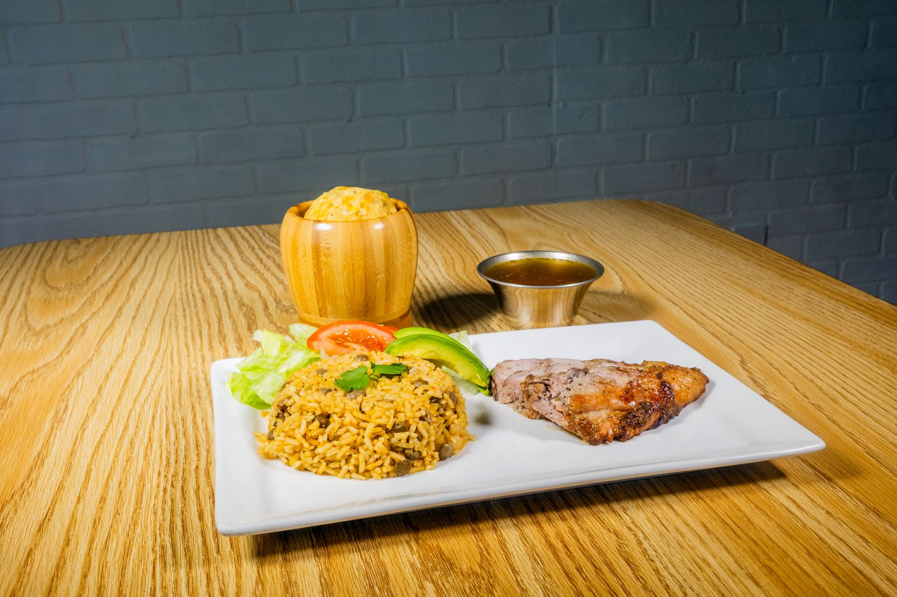
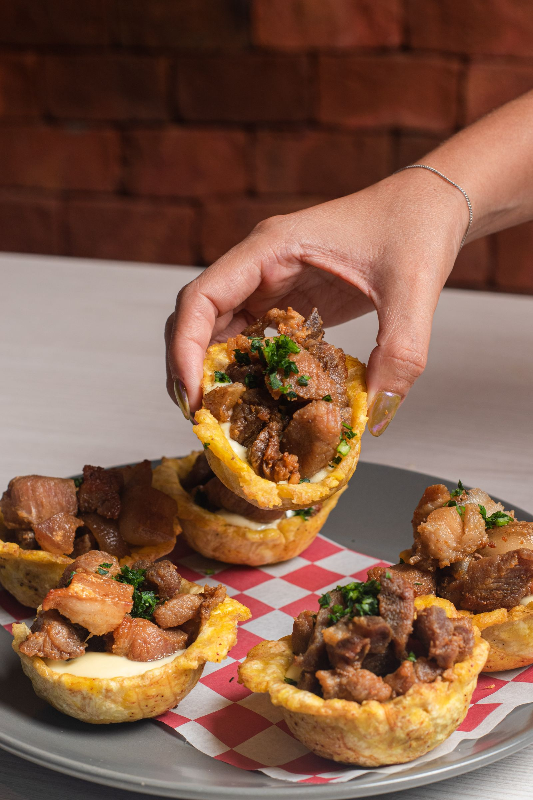
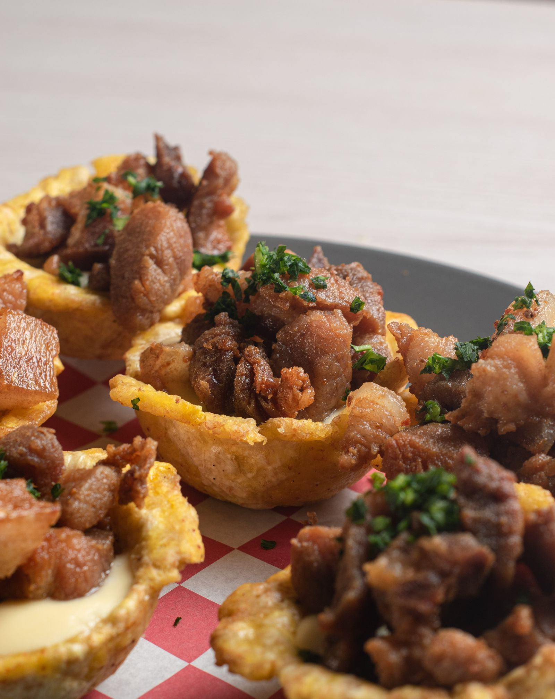

Visit The TexaRican512
Puerto Rican food truck in Austin, serving since 2021.
Address: 1906 E Cesar Chavez St, Austin, TX 78702
Hours: Wednesday to Friday 12:00 PM to 3:00 PM and 6:00 PM to 10:00 PM. Saturday 1:00 PM to 10:00 PM. Sunday 1:00 PM to 8:00 PM. Monday and Tuesday closed.
Phone: (512) 947-8981
Gallery



All gallery photos are stock photos, labeled as such. They show Puerto Rican and Caribbean dishes, not this truck's food.
Contact
The TexaRican512 serves Austin, TX. Questions? Call (512) 947-8981.